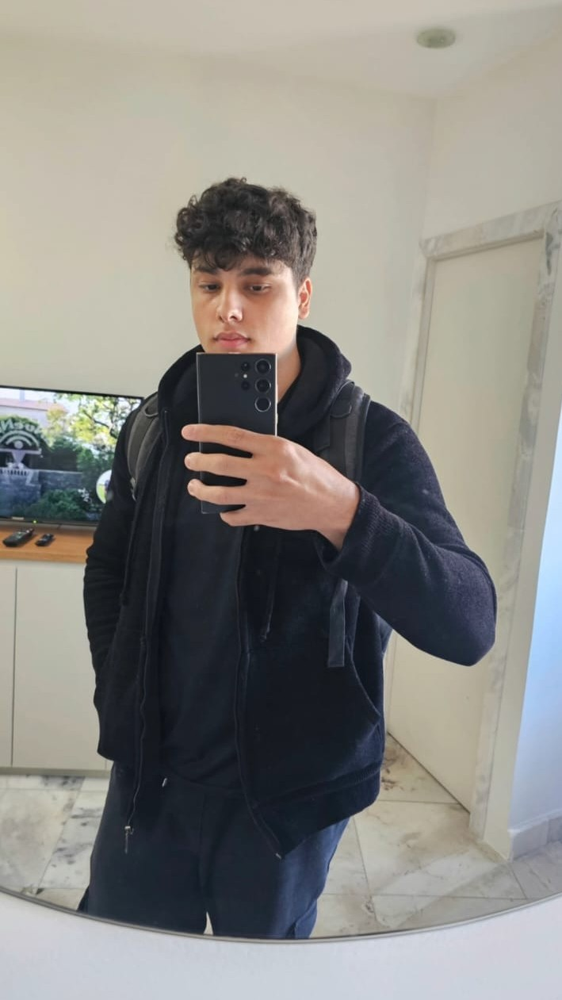

Gabriel-Dev
Olá, e bem-vindo. Sou desenvolvedor Full Stack.
Sou responsável por este site. Meu nome é Gabriel. Atualmente, sou desenvolvedor web Full Stack.
Já tive alguma experiência com programação, como você pode ver na seção “Sobre mim” deste site.
Eu forneço todo o código deste site e de projetos futuros para meus amigos, se eles quiserem.
Você pode me contatar pelo email ou instagram. informações no rodapé.
não Estou atualmente aberto a vagas como desenvolvedor.

Sobre mim Meus projetos
Links no rodapé, lá embaixo.